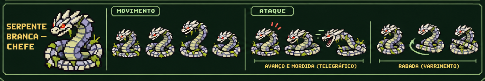

Serpente Branca · Beta 0.9.0
Recortes da própria referência enviada. Escamas, olhos vermelhos, proporções, contornos e cores são os pixels originais. O jogo espelha o personagem conforme a direção e usa cada quadro individualmente. Os vãos do pescoço ficam transparentes; a legenda da prancha é descartada.
Referência original

Mordida aplica veneno por 3 s apenas ao acertar. Dano direto, vida, recargas, alcance, colisão do corpo e portal preservados. A origem da mordida acompanha a boca do novo sprite.